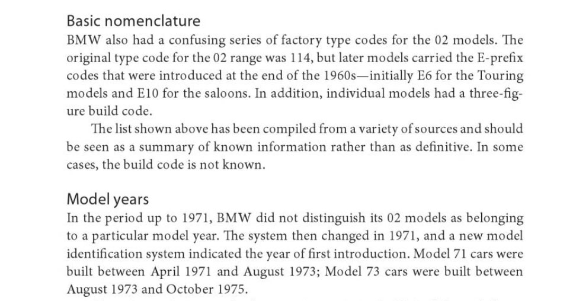
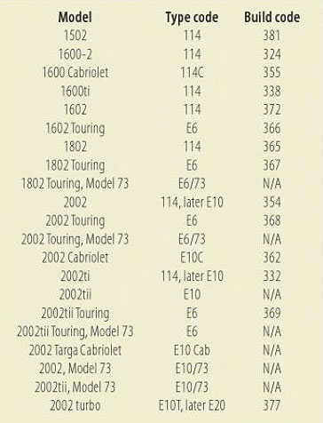

BMW Production series codes (1955 - 1976)
BMW Typ100 — (1955) Isetta 250
BMW Typ101 — (1956–1962) Isetta 300
BMW Typ102 — (1957–1959) Isetta variant?
BMW Typ103 — (1955–1962) Isetta variant (700?)
BMW Typ106 — (1957–1959) Isetta 600
BMW Typ107 — (1959–1965) 700
BMW Typ110 - (1961–1964) 700 Cabriolet
BMW Typ114 — (1966–1973) 1600-2, 1602-2002TI, 1502, 2002
BMW Typ115 — (1963–1964) 1500
BMW Typ116 — (1964–1966) 1600
BMW Typ118 — (1963–1971) 1800-1800TI/SA
BMW Typ120 — (1966–1970) New Class Coupé 2000C/CS
BMW Typ121 — (1966–1972) 2000-2000tii
BMW E3 — (1968–1977) 2.5, 2.8, 3.0, 3.3 "New Six" sedans
BMW E6 — (1971 -1976) 2002 Touring
BMW E9 — (1969–1975) 2800CS, 3.0CS, 3.0CSL "New Six" Coupés
BMW E10 — (1974–1976) 2002, 2002ti, (1972-1974) 2002tii
BMW E12 — (1974–1981) 5 Series
BMW E20 (and E10t) — (1974) 2002 Turbo
BMW E21 — (1976–1983) 3 Series
Why use series codes?
Series codes denote the chassis/body design. From 1960 – 68, BMW used “typ” for a model designation such as the 1965-68 2000c/cs typ120. BMW rebranded series codes using “e” beginning in 1968.
The 2002 Series Code Confusion
Being a BMW 2002 owner for 50 years, I never thought about series codes. Back in the day enthusiasts simply knew the car as a 2002.
The newest generations of 2002 owners, as BMW enthusiasts pretty much grew up talking "e" series codes. In the year 2002 moving forward, if you told the uninitiated that you owned a BMW 2002, the recipient would often respond with “what model?” No, that is the model. It’s called a 2002 built in 1973. So, to make things easier new 2002 owners simply fell in line and began clarifying using e10. Yet, if you note the table above, the 2002 is a typ114. So which is it? Well, both.
BMW introduced the “e” series codes in 1968 a full two years AFTER the 1600 - 2002 design was introduced. They were identified as typ114s. Somewhere a long the way, e10 slipped in there. It is accepted that the 1974-76 square taillight 2002s and the 1972-74 tii tmodels are e10s.
The Restorer's Reference BMW 2002 1968-1976 by James Taylor explains:

